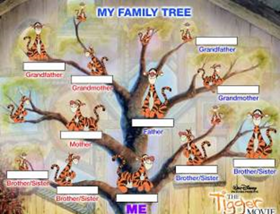
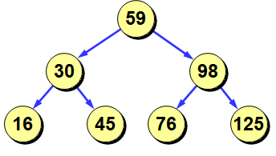
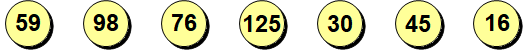

1.Câu trúc dữ liệu phân cấp.Các loại và mục đích của cây.

Dưới đây là một số khái niệm quan trọng liên quan tới cây:
- Cây là một cấu trúc dữ liệu gồm các nút(Node) và các cạnh có hướng kết nối chúng lại với nhau và mỗi cung dẫn đến một nút (ngoại trừ gốc).
- Gốc là nút đầu tiên của cây.
- Lá là một nút mà ở đó không có bất kỳ nút con nào.
- Bậc:của một nút biểu diễn số con của một nút. Nếu nút gốc có bậc là 0, thì nút con tiếp theo sẽ có bậc là 1, và nút cháu của nó sẽ có bậc là 2, …
2.Khái niệm đệ quy.Cây giống như một cấu trúc dữ liệu đệ quy.
Cây là một cấu trúc dữ liệu đệ quy.
Cấu trúc của một nút:
struct Node {
int data; // data
Node* parent; // cha
list children; // danh sách con
};
Cây nhị phân
Cây nhị phân (binary) là cây mà mỗi nút có nhiều nhất hai nút con.
Ứng dụng cây nhị phân.
- Tìm kiếm dữ liệu trong các cây được xây dựng đặc biệt.
- Sắp xếp dữ liệu.
- Tính các biểu thức số học.
- Mã hóa.
Khai báo một node trong của cây.
struct Node {
int data;
Node *left, *right;
};
Khóa là đặc điểm của nút mà tìm kiếm được thực hiện.

Ở bên trái của mỗi nút là các nút có khóa nhỏ hơn và bên phải là các nút có khóa lớn hơn.
Cách tìm kiếm khóa bằng x:
- Nếu cây rỗng, khóa không được tìm thấy.
- Nếu khóa của nút là x thì dừng lại.
- Nếu khóa của nút lớn hơn x, thì hãy tìm x trong cây con bên trái.
- Nếu khóa của nút bé hơn x, thì hãy tìm x trong cây con bên phải.
Tìm kiếm trong cây nhị phân.
Tìm kiếm trong mảng (N phần tử):

Mỗi lần so sánh loại bỏ 1 phần tử => số lần so sánh = N lần.
Tìm kiếm trong cây nhị phân (N phần tử):
Mỗi lần so sánh loại bỏ một nửa số phần tử => số lần so sánh ~ log2N lần.
Ưu điểm của cây nhị phân: rõ ràng sẽ tìm kiếm nhanh hơn.
Nhược điểm:
- Bạn cần phải xây dựng một cái cây trước.
- Bạn phải làm sao cho cây nhị phân đó phải có chiều cao tối thiểu.Vì một số trường hợp sẽ làm cho cây sẽ trở thành giống như một danh sách sách liên kết đơn. Ví dụ như khi bạn nhập một dãy tăng dần. Để tránh tình trạng này thì chúng ta sẽ phải chuyển thanh cây AVL.Cây AVL là cây là cây độ cao của các cây con bên trái và cây con bên phải đảm bảo rằng hiệu số giữa chúng không lớn hơn 1.
Khái niệm về đề quy.
Một hàm đệ quy là một hàm mà phần thân của nó chứa một lệnh gọi đến chính nó.
Điều kiện khả thi của đệ quy:
- Bài toán ban đầu có thể chia thành các nhiệm vụ con đơn giản hơn có kích thước nhỏ hơn.
- Mỗi nhiệm vụ con có cấu trúc(thuật toán giải) tương thự như cấu trúc của bài toán ban đầu.
- Toàn bộ tập hợp các nhiệm vụ phải chứa ít nhất một giải pháp cơ sở.
Giải pháp cơ sở: là một giải pháp được tính toán rõ ràng, và không thông qua việc phân thành các nhiệm vụ con.
Bước đệ quy: là một lời gọi hàm đệ quy cho một nhiệm vụ nhỏ hơn.
Back Page